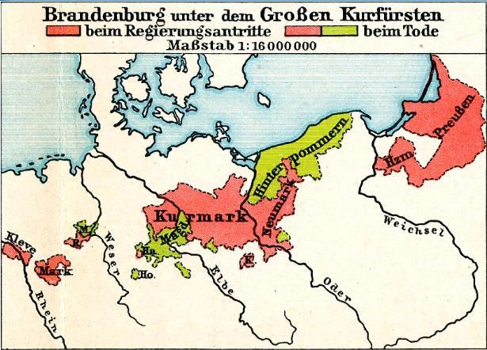
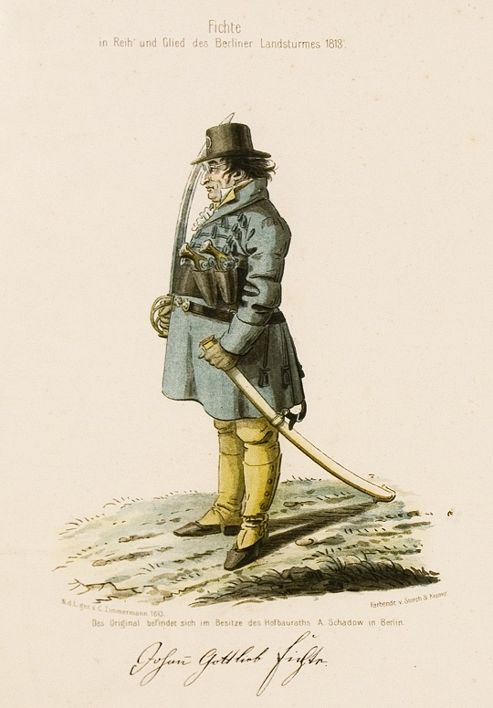
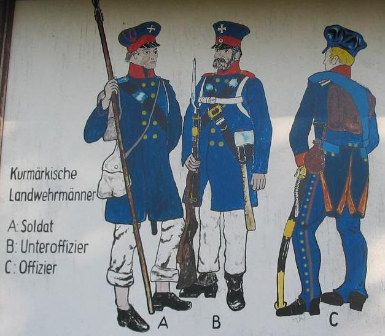
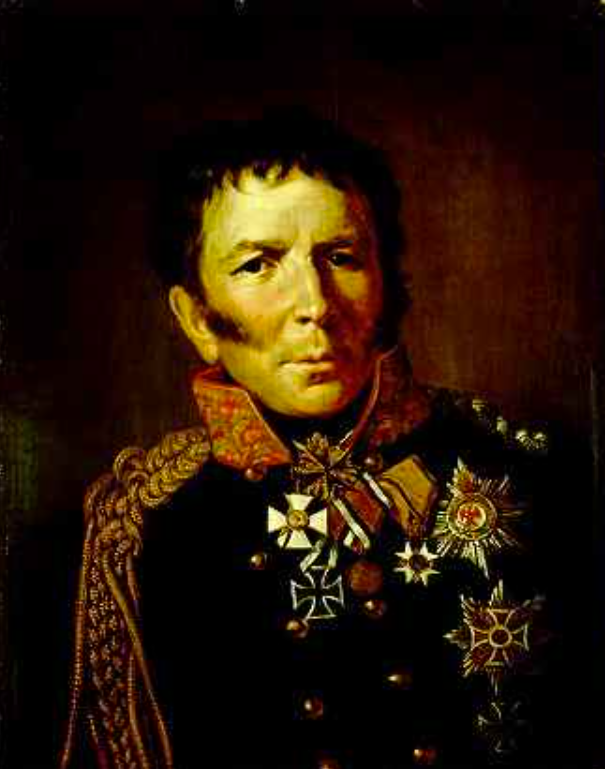

바우첸을 향하여 (2) - 민병대의 의미
게시: 2022-12-19T06:30:24+09:00
뤼첸에서 후퇴할 때 드레스덴으로 향한 러시아군과는 달리 프로이센군은 마이센으로 향했으나, 정작 프로이센 국왕은 물론 프로이센군의 두뇌라고 할 수 있는 샤른호스트는 러시아군과 함께 드레스덴으로 향했습니다. 이는 프로이센 수뇌부가 당시 현실을 제대로 파악하고 있었기 때문이었습니다. 아무리 뤼첸 전투에서 러시아군이 소극적으로 행동했다고 하더라도, 이 전쟁의 주역은 러시아군이었고 프로이센군은 러시아군을 보조하는 역할에 불과했습니다. 여기서 베를린을 지킨답시고 러시아군과 갈라선다면 프로이센은 베를린 뿐만 아니라 프로이센 전체를 잃어버릴 가능성이 매우 컸습니다. 샤른호스트는 불안해하는 국왕 프리드리히 빌헬름을 다독거리며 엄청난 분량의 서류를 처리하며 프로이센군의 재편성에 돌입했습니다. 뤼첸 전투에서 잃은 병력을 보충하기 위한 모병과 그 무장 뿐만 아니라, 당장 후퇴하는 프로이센군을 위한 보급품 마련 등 할 일이 엄청나게 많았습니다. 다행히 영국에서 보내온 머스켓 소총 1만 정과 야포들이 북쪽 해안 도시인 콜베르크(Kolberg)에 마침내 도착했고, 중립국인 오스트리아에서도 2만 정의 머스켓 소총과 60톤의 화약을 보내왔습니다. 이런 군수품은 프로이센군의 재무장에 큰 도움이 되었습니다. 베를린을 사실상 포기하고 러시아군과 함께 드레스덴 동쪽으로 퇴각해야만 한다고 국왕 프리드리히 빌헬름을 설득하는 것은 의외로 전혀 문제가 없었습니다. 수도 베를린을 빼앗기는 것에 대해 분통을 터뜨렸던 것은 귀족 출신 장교들 뿐이었고, 프리드리히 빌헬름은 처음부터 베를린에 대해서는 별다른 애착이 없었기 때문이었습니다. 이건 놀라운 일은 아니었습니다. 프랑스 부르봉 왕정의 근거지는 베르사이유이지 파리가 아닌 것처럼, 프로이센 호헨촐레른 왕정의 근거지는 베를린이 아니라 그 옆의 포츠담이었습니다. 게다가 원래 유럽 국가들에서는 수도에서 상업을 통해 부를 쌓은 시건방진 시민 계급과 국왕이 꼭 사이가 좋은 것만은 아니었습니다. 게다가 연초에 베를린을 탈출할 때부터 이미 프리드리히 빌헬름은 베를린에 대해서 정을 떼고 자신의 임시 행궁을 차린 슐레지엔의 브레슬라우를 자신의 근거지로 생각하고 있었습니다. 그러다보니 베를린 지역의 국민방위군인 쿠마르크 란트베어(Kurmark Landwehr)에 약 1만 정의 소총이 부족했고 그에 비해 슐레지엔에는 머스켓 소총이 남아 돌았는데도 불구하고, 그 여분의 소총을 슐레지엔에서 베를린으로 보내려는 샤른호스트의 계획에 대해 프리드리히 빌헬름이 오히려 딴지를 걸고 승인하지 않을 정도였습니다. 프리드리히 빌헬름의 입장은 '베를린 방위를 위한 무기는 그 근처, 가령 포메른(Pommern, 포메라니아) 국민방위군에서 남는 무기를 보내든가 말든가 하라'는 것이었습니다.

(쿠마르크(Kurmark)라는 것은 '선제후의 땅' 정도로 해석되는 단어인데, 대략 브란덴부르크 선제후의 영토를 가리키는 말입니다. 그러니까 쿠마르크 란트베어(Kurmark Landwehr)는 브란덴부르크 국민방위군, 그러니까 굳이 우리나라에 비유하자면 경기도 방위대 정도에 해당한다고 보시면 됩니다.)

(그림은 1813년 당시 베를린 민병대로 있던 독일 철학자 피히테(Johann Gottlieb Fichte)의 모습입니다. 민병대(Landsturm, '란트스텀' 정도로 발음)라는 것은 15세에서 60세 사이의 남성 중에서 정규군이나 국민방위군으로 복무하지 않는 사람들을 모아 편성한 군대로서, 피히테의 그림에서 보시는 것처럼 제대로 된 무장이나 군복을 갖추지는 못했고 1813년 당시에도 베를린 시내에서 최후의 경비병 역할 정도를 수행했습니다. 그나마 그림 속 피히테의 경우엔 권총과 군도를 갖추고 있습니다만, 상당수는 그냥 도끼나 쇠스랑 등으로 무장하고 있었습니다.)

(쿠마르크 국민방위군입니다. A가 병사, B는 부사관, C가 장교입니다. 국민방위군(Landwehr, '란트베어' 정도로 발음)은 17세에서 45세 사이의 남성 중에서 정규군으로 복무하지 않는 사람들로 편성한 군대입니다. 이들은 정규군처럼 원정에는 참여하지 않았고 적군이 침공할 때 해당 지역의 방위에만 투입되는 것이 원칙이었습니다. 민병대보다는 좀더 잘 무장되었으나 역시 정규군보다는 무기와 훈련이 크게 부족했습니다. 그럼에도 불구하고, 국민방위군은 중대급까지는 귀족 출신 정규군 장교들이 아닌, 그 동네의 명망있는 인물이 선출되어 임명된 장교들이 지휘했고, 그 자체가 국왕의 군대가 아닌 민중의 군대로 인식되었기 때문에 귀족들로부터는 많은 비웃음과 함께 견제를 받아야 했습니다. 프리드리히 빌헬름이 베를린 일대의 국민방위군에게 여분의 소총을 공급하는 것에 대해 반대한 것에도 그런 견제 의식이 작용하고 있었습니다.) 물론 샤른호스트의 계획이 베를린을 그냥 벌거숭이로 내버려두는 것은 아니었습니다. 그는 할러에서 북쪽으로 퇴각하여 베를린 방면으로 향한 뷜로의 군단 6천4백과 24문의 화력을 베를린 방어에 전념하도록 배정했습니다. 그리고 인근 지역에 미리 구성해둔 국민방위군(Landwehr)과 민병대(Landsturm)가 뷜로의 군단과 어떻게 협력할지에 대해서는 해당 지역의 군사 정부가 자치적으로 판단하도록 했는데, 이는 아직 전제 왕정에 협력하는 지방 귀족들의 모습이 남아있었던 봉건제적인 프로이센의 특성을 보여주는 것이었습니다. 샤른호스트는 그런 지역 정부와 뷜로의 정부군 간에 협력이 잘 이루어지도록 하기 위해 자신의 심복이자 국왕의 부관이었던 보이엔 대령(Leopold Hermann Ludwig von Boyen)을 연락 장교로 베를린에 파견하기도 했습니다.

(보이엔입니다. 나폴레옹보다 2살 어렸던 그는 17세의 나이에 소위로 출발했고 여러가지 공부를 많이 하기는 했으나 11년 뒤에나 대위로 승진한 것을 보면 결코 잘 나가는 귀족 가문 출신은 아니었습니다. 그런 그가 역시 비슷한 처지였던 프로이센군 개혁가 샤른호스트의 추종자가 된 것은 너무나 자연스러운 일이었습니다. 프로이센군의 혁신을 위해 노력하던 그는 1812년 프리드리히 빌헬름이 결국 나폴레옹에게 굴복하고 러시아 원정에 동참하기로 하자 환멸을 느껴 대령 계급을 버리고 전역했으나, 1813년 반-나폴레옹 편에 붙은 프리드리히 빌헬름이 그를 다시 부르자 그에 응하여 많은 전공을 세웠습니다. 그는 1814년 전쟁이 끝난 뒤 국방부 장관이 되자, 샤른호스트의 추종자답게 국민방위군을 중시하는 국방 개혁을 시도했습니다. 그러나 국민방위군이 귀족 위주의 정규군과는 대치되는 개념이라고 반발한 귀족 출신 장교단의 반발에 부딪혀 결국 1819년 사임해야 했습니다. 그는 이후 21년 간이나 은퇴 생활을 했으나 프리드리히 빌헬름 4세가 즉위하면서 그를 다시 부르자 그에 응해 다시 국방부 장관이 되었습니다. 그러나 역시 결국 귀족들의 반발은 여전하여 그가 원하는 군 개혁은 원활하지 못했습니다.) 나이가 많은 데다가 사격 및 기동, 제식 등의 훈련이 절대적으로 부족했고, 당시 전투에서 매우 중요한 역할을 하던 포병 지원이 부족했던 국민방위군은 그다지 믿음직스럽지 못했습니다. 특히 민병대는 소총조차 제대로 갖추지 못했으므로 당연히 실제 전투에서는 별 역할을 하지는 못했습니다. 그럼에도 이들의 역할은 매우 중요했습니다. 어쨌거나 일부 병력을 배치해야 했을 수비대를 이런 국민방위군과 민병대 덕분에 야전군으로 돌릴 수 있는 여지가 생겼을 뿐만 아니라, 더 중요한 의미도 근대전에 부여했습니다. 1813년 프로이센에서 '란트스텀'(Landsturm) 편제령이 공표되기 전에는, 적군이 침공하여 프로이센 영토를 점령하더라도 그 주민들은 그냥 적군이 시키는 물자 보급이나 치안 유지 등에 협조하는 것이 상식이었습니다. 가령 1805년 나폴레옹이 오스트리아 수도 빈을 점령했을 때 수도 빈의 국민방위군은 프랑스군의 위임을 받아 시내 치안 유지에 협조할 정도였습니다. 1806년 나폴레옹이 예나-아우어슈테트 전투에서 승리하고 베를린에 입성할 때 베를린 시민들은 마치 록스타를 영접하듯 나폴레옹을 환영했었습니다. 현대적인 국가 개념으로는 약간 이해가 어렵지요. 당시 전쟁이라는 것은 국민들 간의 투쟁이 아니라 왕조 간의 분쟁이고, 국민은 영토나 가축, 금화 등과 같이 왕조들끼리 서로 가지려고 다투는 '자산'에 불과했기 때문이었습니다. 그러나 1813년 프로이센의 '란트스텀' 편제령에서는 민병대, 즉 사실상 모든 남성 국민에게 적극적으로든 소극적으로든 적군에 저항하도록 요구했습니다. 이건 당시로서는 매우 충격적이고 혁신적인 변화였는데, 물론 이는 당시 나폴레옹에게 거국적으로 저항하던 스페인 민중의 선례가 있었기 때문에 가능했던 일이었습니다. 이런 변화는 뤼첸에서 후퇴한 프리드리히 빌헬름이 공표한 "국왕 전하께서는 베를린 시민들이 용기와 희생의 표본을 보여줄 것이라고 확신하신다"라는 대국민 선언에서도 드러납니다. 이건 과거 전제 왕정의 가치관으로 보면, 마치 산적의 습격을 받은 목장주가 소나 돼지에게 '산적의 침탈에 대항하여 싸우라'고 호소하는 것이나 마찬가지였습니다. 이걸 현대적인 시각으로 보면 왕 자신은 러시아군 사령부 한 가운데서 안전하게 있으면서 국민들에게만 피흘리며 싸우라고 명령하는 것으로 보일 수도 있었지만, 당시 관점에서는 여태껏 소나 돼지로 여기던 국민들을 비로소 사람으로 인정한 국왕이 온갖 체면을 버리고 사정하는 것으로 받아들여졌습니다. 그리고 무엇보다 더 중요한 것은 프리드리히 빌헬름이 베를린을 포기하고 러시아군과의 합동 작전을 택했다는 점이었습니다. 이는 프로이센 국민들에게는 물론 영국과 오스트리아 등 유럽 전체에게, 이번 전쟁에서 프로이센의 행동은 '싸움에 패하면 결국 꼬리를 내리고 나폴레옹과 적당히 협상하던' 과거와는 크게 다를 것이라고 선언하는 것이었습니다. 이 선언은 나폴레옹의 계획을 근본부터 흔들어 놓는 것이었습니다. Source : The Life of Napoleon Bonaparte, by William Milligan Sloane Napoleon and the Struggle for Germany, by Leggiere, Michael V
https://www.preussen-im-rheinland.de/geschichte/die-preussischen-rheinlande-1815-1918/preussisches-militaer-in-der-rheinprovinz-1815-1914/landwehr-der-rheinprovinz-im-vormaerz/ https://en.wikipedia.org/wiki/Landsturm https://en.wikipedia.org/wiki/Landwehr https://befreiungskriege.files.wordpress.com/2008/02/knoe17_37.jpeg https://en.wikipedia.org/wiki/Hermann_von_Boyen https://en.wikipedia.org/wiki/Johann_Gottlieb_Fichte https://en.wikipedia.org/wiki/Kurmark
{kind=link}